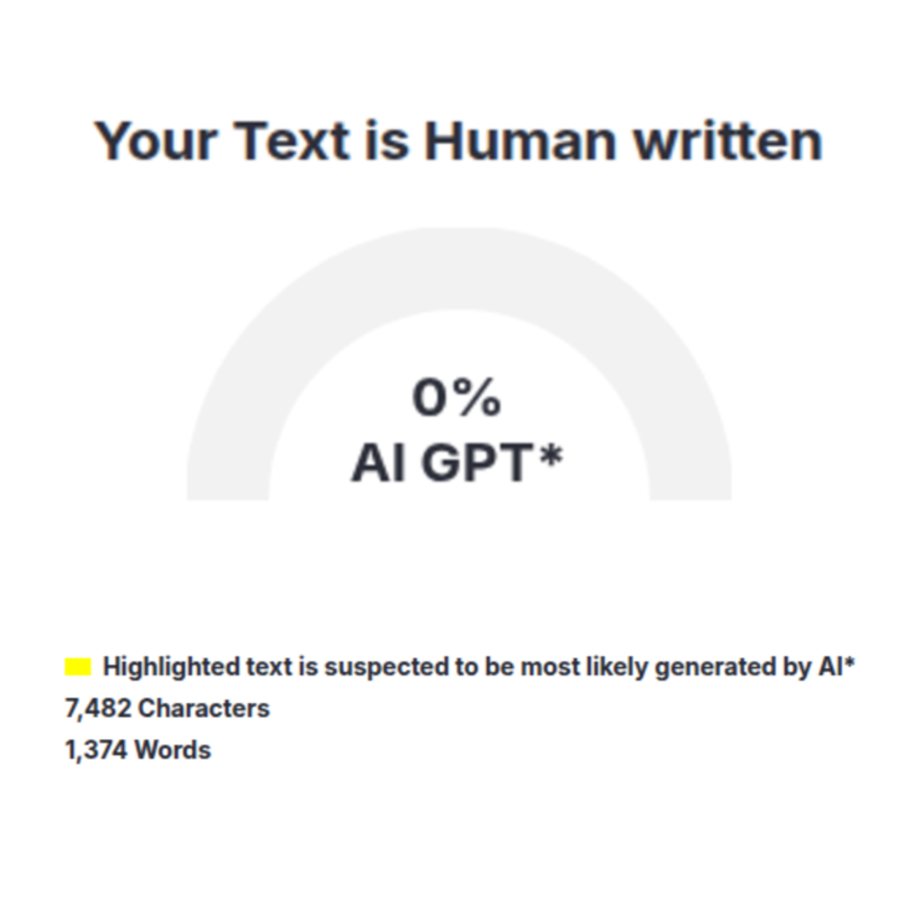

EEAT Friendly
Aman Adsense
⚡ PROMO BERAKHIR 31 MEI 2026
Prompt Artikel POV yang bikin artikel Anda human-like 100%, EEAT kuat, zero GPT detector, dan siap mendominasi Google.
ZeroGPT, GPTZero, dan detector lain langsung mendeteksi.
Karena pakai prompt pasaran yang itu-itu saja.
Konten tipis, kurang EEAT, dan tidak ada opini pribadi.

✅ 0% AI Detector
Buat artikel baru dari ide/topik saja yang ada di kepala kamu.
Ubah artikel dari link website/blog orang lain jadi original.
Gambar utama artikel ala thumbnail YouTube viral
Hasil tidak AI kaku, zeroGPT 0%
Real-time,tidak ada data cut-off
Opini tajam
Analisis logis
POV pribadi
Seperti ngobrol teman
500+ blogger Indonesia sudah pakai
Sari Rahayu
Blogger Parenting • Bandung
"Artikelnya terasa banget seperti tulisan saya sendiri. Traffic naik signifikan!"
Dimas Irfan
Blogger Tech • Jakarta
"ZeroGPT 0%! Rewrite artikel lama jadi jauh lebih bagus."
Laras Wati
Blogger Bisnis • Surabaya
"Opini pribadinya sangat relate. Pembaca suka banget!"